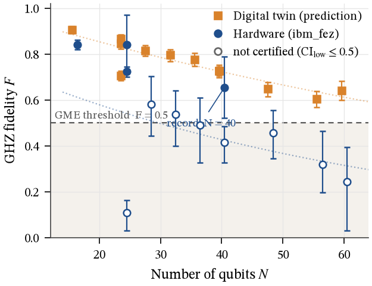
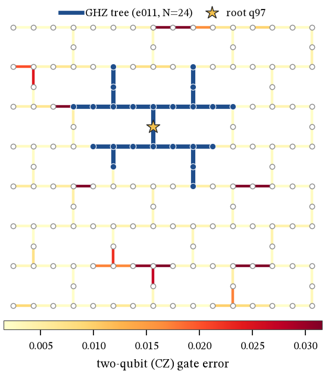
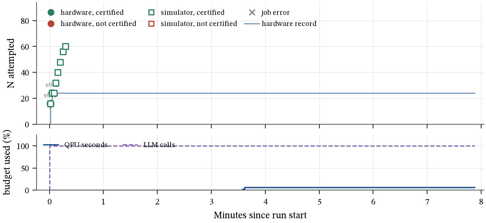
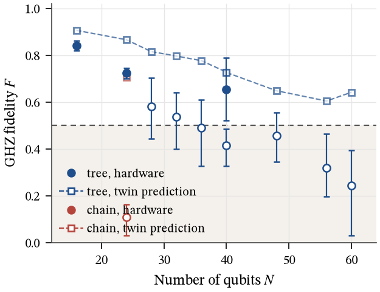
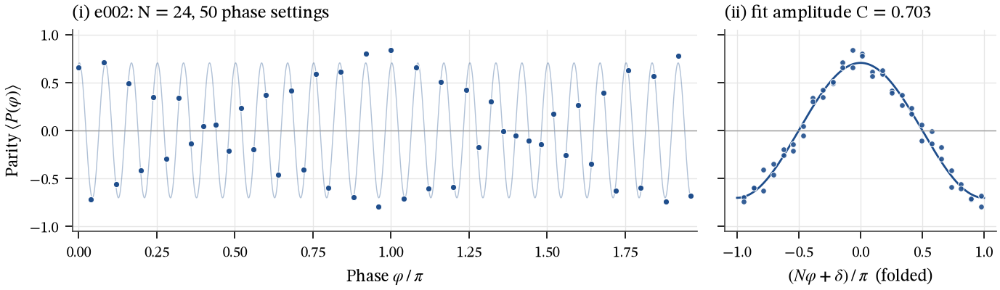

This paper reports an autonomous search for Greenberger–Horne–Zeilinger (GHZ) states of significant size on the 156-qubit IBM processor ibm_fez. An autonomous language-model agent (gemini-2.5-flash) designed a batch of 8 hardware experiments in a single planning step (2 had returned from the queue when this paper was generated; the public queue made adaptive scheduling impossible). Prior to submission, each experiment was predicted by a digital twin, a noise simulation driven by live calibration data, utilizing 31 s of a 480 s QPU budget.
Fidelity to the ideal GHZ state was estimated from population and parity-oscillation measurements, incorporating bootstrap confidence intervals. Genuine multipartite entanglement was considered established only when the lower confidence bound exceeded 1/2. On hardware, the agent demonstrated an N = 24 GHZ state with a fidelity of F = 0.723 (CI 0.700–0.746). The digital twin overestimated hardware fidelity by 0.07 to 0.14 across 2 sizes, quantifying the noise not modeled.
The statistical strength of the record, the role of error mitigation, and the limitations of an agent that selects its own best result are discussed. This paper was generated automatically from the run log.
Greenberger–Horne–Zeilinger (GHZ) states [1, 2], |GHZN⟩ = (|0⟩⊗N + |1⟩⊗N)/√2, are the canonical maximally entangled states of N qubits. Because their single coherence term |0…0⟩⟨1…1| dephases N times faster than a single qubit, the largest GHZ state a device can prepare is a compact, demanding benchmark of its two-qubit gates, readout and coherence all at once. GHZ states of increasing size have marked progress across platforms, from trapped ions [5] to Rydberg atoms [6] and superconducting circuits [7, 8], and today's processors with more than a hundred qubits [9] make much larger states conceivable.
Preparing a state is not the same as proving it is entangled. A standard witness [3, 4] uses the fidelity F = ⟨GHZN|ρ|GHZN⟩: any state with F > 1/2 is genuinely multipartite entangled (GME), i.e. it cannot be written as a mixture of states that are separable across any bipartition. We therefore treat certification as a statistical claim: the lower end of a confidence interval on F must exceed 1/2.
Scaling the certified N on a 156-qubit heavy-hex processor [10] is a search problem over layouts, circuit shapes and mitigation settings under a tight hardware budget. In this work the search was run end-to-end by an autonomous agent built on a large language model (Gemini), which proposed every experiment, predicted each hardware result with a digital twin before it ran, and wrote this report. The human operator set the goal and budget, and did not intervene in experiment selection.

Experiments targeted ibm_fez, a 156-qubit IBM Heron processor with 176 tunable couplers arranged in a heavy-hex lattice and native CZ entangling gates. At the start of the run the agent recorded a live calibration query (timestamp 2026-11-08T03:07:49+00:00). Median values across the chip were T1 = 148 µs, T2 = 107 µs, readout error 1.07%, single-qubit (√X) error 2.9×10−4 and two-qubit error 0.28%. The snapshot (Fig. 3) drove layout selection and the noise model of the simulator: a Pauli-frame simulation (depolarizing gate errors, per-layer T1/T2 idle decoherence from real gate durations, and readout error) that keeps the per-qubit and per-coupler noise of the physical qubits actually used. Hardware runs, where present, need no such approximation.
A GHZ state on N physical qubits is prepared by a Hadamard on a root qubit followed by CNOTs (compiled to CZ) fanning out along a spanning tree of the coupling graph, so the entangling depth scales with the tree height rather than with N. The agent chose among layout strategies: best_chain selects a low-error one-dimensional path through the coupling graph; weighted_tree grows a spanning tree outward from a root qubit, at each step adding the neighbouring qubit with the lowest combined cost of CZ error, readout error and dephasing (from the calibration snapshot), with a penalty on tree depth, which steers the state away from poorly calibrated couplers. It could also exclude specific qubits and select a linear (chain) circuit instead of a tree. For the record experiment (e002, N = 24) the tree has 23 two-qubit gates arranged in 8 layers of two-qubit-gate depth (total transpiled depth 32).
Following Refs. [6, 8], the fidelity splits into a population and a coherence term,
where P is read off a computational-basis measurement. The coherence C = 2|ρ0…0,1…1| is obtained from parity oscillations: after preparing the state, every qubit receives a phase rotation Rz(φ) and is measured in the X basis, and the parity
is sampled at the 2N + 2 phases φj = jπ/(N + 1), j = 0,…,2N+1. Only a GHZ-type coherence oscillates at frequency N, so C is its Fourier amplitude,
Each experiment therefore runs 2N + 3 circuits (1000 shots each), plus two readout-calibration circuits when mitigation is on. A 95% confidence interval on F comes from a percentile bootstrap that resamples the shots of every circuit independently [13], and an experiment is certified when Flow > 1/2, which by the witness of Refs. [3, 4] implies genuine multipartite entanglement of the prepared state. Error suppression and mitigation: readout-error mitigation in 100% of experiments, inverting per-qubit (tensored) confusion matrices estimated from all-|0⟩ and all-|1⟩ calibration circuits; because both the GHZ populations and the parity are product-form functionals of the bitstring, this inversion is applied exactly, shot by shot; on hardware experiments, XpXm dynamical decoupling on idle qubits [11] (100%) and measurement twirling [12] (100%) via the Qiskit Runtime sampler; these are not modelled in simulation. Circuits were built and transpiled with Qiskit [14], keeping the planned physical layout fixed.

In its interactive mode the agent runs a closed loop over simulator and hardware experiments. On the public queue of ibm_fez, however, a single job can wait hours, so a loop that waits for each result could finish only one or two hardware experiments in a night. For this run the agent therefore designed the entire hardware batch in one planning step. Its context was the live calibration summary, its own earlier simulator results and a cost table for each experiment size. Every proposed experiment was then checked by a validator, which enforces a safe small-N anchor, a matched tree-versus-chain comparison and the QPU budget. Each experiment was also run through a digital twin (the noise simulator of §2.1 driven by the live calibration) to record a prediction before the hardware result existed. All jobs were then submitted at once and collected as they completed.
The batch was: e001: N = 16 weighted_tree; e002: N = 24 weighted_tree; e003: N = 24 best_chain; e004: N = 32 weighted_tree; e005: N = 40 weighted_tree; e006: N = 48 weighted_tree; e007: N = 56 weighted_tree; e008: N = 60 weighted_tree. It used 3 of its 7 permitted model calls and 31.0 of 480 QPU seconds (6%). The agent's stated rationale, verbatim:
“This batch is designed to meet all requirements: a robust anchor, a direct comparison between 'weighted_tree' and 'best_chain', and an exploration of the hardware frontier for 'weighted_tree'. The N=16 anchor ensures a certified result even if larger experiments fail. The N=24 matched pair will directly assess if the error-aware 'weighted_tree' layout outperforms the textbook 'best_chain' on real hardware. The remaining experiments progressively increase N for 'weighted_tree' up to N=60, aiming to identify the maximum number of qubits for certified entanglement on ibm_fez, anticipating a lower frontier than simulator results due to real-world noise. All experiments use 1000 shots to maximize confidence in fidelity estimation within the budget.”

The largest state certified on hardware is the N = 24 GHZ state of experiment e002 (Table 1), with F = 0.723 and confidence interval [0.700, 0.746]: the lower bound clears the GME threshold by 0.200. Its populations and coherence are P = 0.743 and C = 0.703; as is typical, the coherence term limits the fidelity. The state used a weighted_tree layout rooted at q88 (Fig. 3) whose couplers have a mean CZ error of 0.30% and mean readout error 1.06%, against chip medians of 0.28% and 1.07%.
Figure 2 shows the parity oscillation of e002. For a GHZ-type coherence, folding the 50 phase settings by Nφ collapses them onto a single cosine, the signature of an N-body coherence. An independent least-squares fit of Eq. (2) gives amplitude 0.703 (residual RMS 0.074), consistent with the estimator value C = 0.703.
Fidelity decays roughly exponentially with size (Fig. 1). Fitting F(N) = F0 e−N/Ne to the central values gives hardware: Ne ≈ 53, crossing F = 1/2 near N ≈ 44; simulation: Ne ≈ 125, crossing F = 1/2 near N ≈ 85. These fits are descriptive only; they ignore the different layouts used at each size.
Prediction versus hardware. Across 2 hardware experiments the digital twin overestimated fidelity by 0.104 on average (range +0.065 to +0.143) and predicted the certification outcome correctly in 2 of 2 cases. Because every prediction was recorded before submission, this is an honest out-of-sample test of the noise model.

Figure 4 places every experiment on the run's timeline together with budget consumption.

| ID | Mode | N | Layout | 2q depth | P | C | F | CI | GME | QPU s |
|---|---|---|---|---|---|---|---|---|---|---|
| e001 | HW | 16 | weighted_tree | 6 | 0.829 | 0.852 | 0.841 | [0.820, 0.862] | ✓ | 13.00 |
| e001-twin | twin | 16 | weighted_tree | 6 | – | – | 0.906 | [0.890, 0.921] | ✓ | – |
| e002 | HW | 24 | weighted_tree | 8 | 0.743 | 0.703 | 0.723 | [0.700, 0.746] | ✓ | 18.00 |
| e002-twin | twin | 24 | weighted_tree | 8 | – | – | 0.866 | [0.843, 0.885] | ✓ | – |
| e003-twin | twin | 24 | best_chain / linear | 23 | – | – | 0.705 | [0.685, 0.727] | ✓ | – |
| e004-twin | twin | 32 | weighted_tree | 9 | – | – | 0.796 | [0.768, 0.820] | ✓ | – |
| e005-twin | twin | 40 | weighted_tree | 10 | – | – | 0.727 | [0.698, 0.753] | ✓ | – |
| e006-twin | twin | 48 | weighted_tree | 11 | – | – | 0.648 | [0.614, 0.677] | ✓ | – |
| e007-twin | twin | 56 | weighted_tree | 11 | – | – | 0.604 | [0.569, 0.638] | ✓ | – |
| e008-twin | twin | 60 | weighted_tree | 11 | – | – | 0.642 | [0.600, 0.682] | ✓ | – |
The statistical significance of the reported fidelity is subject to several caveats. The lower bound of the confidence interval exceeds 1/2 by 0.200. This interval accounts solely for shot noise and does not incorporate potential drift occurring between the 51 individual circuits within the experiment or between distinct experimental runs. Furthermore, the selection of configurations to execute and the identification of the record result were performed by the autonomous agent. Only 1 hardware experiment was conducted within four qubits of the record size. Reporting the best among multiple noisy estimates inherently introduces an upward bias in the reported fidelity, for which no correction was applied. Consequently, a pre-registered confirmation run with identical specifications, ideally employing an increased number of shots, is necessary before the N = 24 result can be considered definitively established.
Readout-error mitigation was applied to 100% of the experiments. This technique reweights measured populations and parities using the inverse of a per-qubit confusion model, meaning the certified fidelity pertains to the mitigated estimator rather than to raw measurement counts. The underlying model assumes readout errors are uncorrelated across qubits and devoid of crosstalk. The error rates themselves are derived from only two calibration circuits, and the shot noise associated with these calibrations is not propagated into the bootstrap interval, which suggests the interval may be somewhat underestimated. A conservative interpretation of the result would necessitate demonstrating that the unmitigated fidelity also exceeds 1/2, a condition not independently verified in this study.
A consistent overestimation of hardware fidelity by the digital twin was observed across all matched sizes, with differences ranging from 0.07 to 0.14. The noise model employed for the twin is constructed from a single calibration snapshot and omits factors such as crosstalk, leakage, non-Markovian dephasing, and temporal drift. It is therefore anticipated that this discrepancy will increase with N and with circuit duration. Since the twin predictions were finalized prior to the execution of the hardware jobs, the magnitude of this gap provides an unbiased measure of the portion of the device's error budget not captured by the model.
The experimental run had a duration of 0.1 hours and relied on a single calibration snapshot, during which device parameters may exhibit drift. While a fidelity exceeding 1/2 certifies genuine multipartite entanglement, it does not provide a complete characterization of the quantum state. Additionally, the validity of the witness depends on the assumption that the measurements performed correspond to the intended ones. Finally, the agent's search strategy was brief and greedy, exploring only a limited portion of the available parameter space for roots, layouts, and settings. This suggests that the certification of larger entangled states on this device remains plausible.
| Run ID | 20261107-220808-qpu |
| Run mode / backend | qpu / ibm_fez |
| Run start / end | 2026-11-08 03:08 UTC / 2026-11-08 03:16 UTC |
| Calibration | live backend query, 2026-11-08T03:07:49+00:00 |
| Budget used | 31.0 / 480 QPU s; 3 / 7 LLM calls |
| Agent model | gemini:gemini-2.5-flash |
| Software | qiskit 2.6.2, qiskit-ibm-runtime 0.51.0, qiskit-aer 0.18.2, numpy 2.5.4 |
Hardware job IDs:
e001: dbnuf68ou4as73b57070; e002: dbnuf6oqtr0c73admn4g
Every number in this paper is computed from runs/20261107-220808-qpu/ (calibration.json,
events.jsonl, experiments/*.json) and can be regenerated with
uv run python -m scripts.write_paper runs/20261107-220808-qpu.